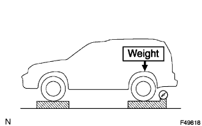
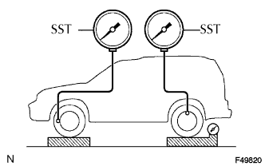
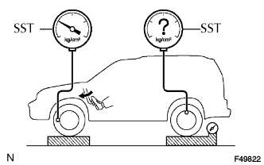
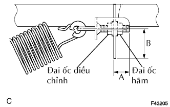

VAN ĐIỀU HOÀ LỰC PHANH THEO TẢI > KIỂM TRA TRÊN XE |
| 1. KIỂM TRA CỤM VAN ĐIỀU HOÀ LỰC PHANH THEO TẢI |
|  |
Đặt xe đến trọng lượng của nó.
Đặt các vật nặng (khi cần) trên phía sau cho đến khi tải của cầu sau được chỉ ra dưới đây.
|  |
Đặt SST và xả khí ra khỏi hệ thống phanh.
|  |
Tăng áp suất dầu phanh phía trước lên 10,000 kPa (102 kgf/cm2, 1,450 psi) khi nhấn bàn đạp phanh và kiểm tra áp suất phanh sau.
| 2. ĐIỀU CHỈNH CỤM VAN ĐIỀU HOÀ LỰC PHANH THEO TẢI |
|  |
Nới lỏng đai ốc hãm.
Điều chỉnh áp suất dầu phanh sau bằng cách thay đổi chiều dài của "A" hoặc "B"
Đối với áp suất thấp hơn - "A" hay "B" dài hơn.
Đối với áp suất cao hơn - "A" hay "B" ngắn hơn.
| Đối với một vòng quay của đai ốc điều chỉnh "A" | Đối với chiều dài B là 1 mm (0.04 in.) |
| 220 kPa (2.2 kgf/cm2, 32 psi) | 30 kPa (0.3 kgf/cm2, 4.4 psi) |
Xiết chặt đai ốc hãm.